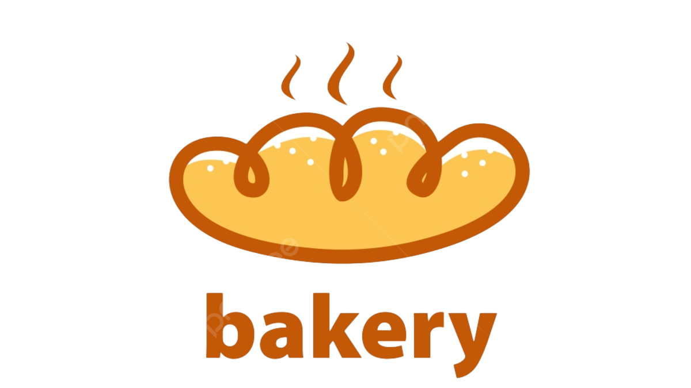

Nikmati Sepotong Kebahagiaan di Setiap Gigitan
Toko Roti Sepotong berdiri sejak tahun 2000 dengan visi menghadirkan roti berkualitas tinggi untuk semua kalangan. Kami selalu menjaga rasa dan kualitas produk kami.
Kami menawarkan berbagai jenis roti, mulai dari roti manis, roti gurih, hingga roti khusus untuk acara istimewa. Semua roti dibuat dengan bahan berkualitas.
Visi kami adalah menjadi toko roti pilihan utama masyarakat dengan menghadirkan produk berkualitas tinggi. Misi kami adalah memberikan pelayanan terbaik dan menjaga kepuasan pelanggan dengan produk-produk yang sehat dan lezat.
Toko Roti Sepotong tersedia di berbagai kota di Indonesia. Silakan kunjungi outlet kami yang terdekat dengan Anda!
"Rasanya enak banget, tidak pernah mengecewakan!" - Rina
"Selalu jadi pilihan utama saat ada acara keluarga." - Budi
"Pelayanan ramah dan cepat. Roti selalu segar." - Ayu